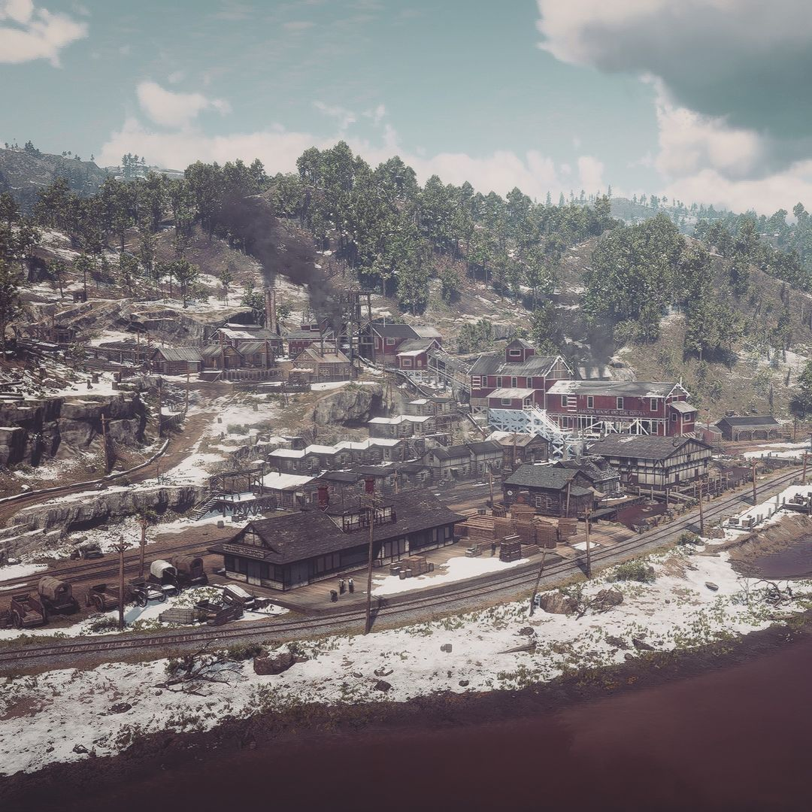
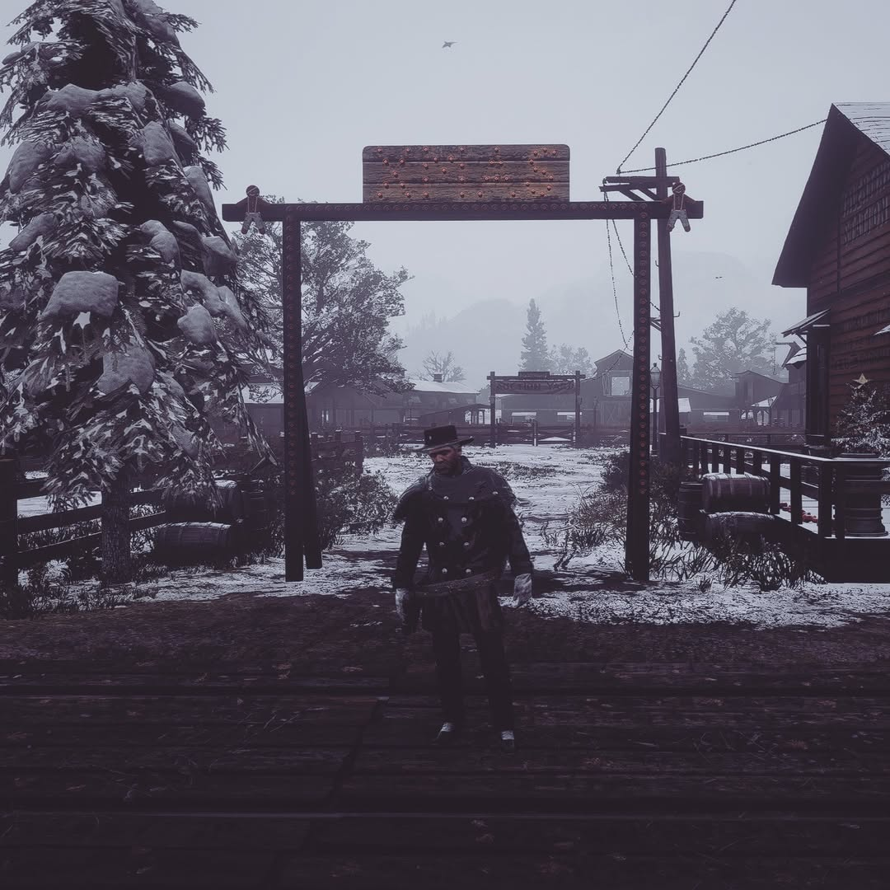

Texas Life RP
Vivez une expérience immersive inédite dans l'Ouest sauvage de 1885. Chaque moment est une aventure unique, chaque décision forge votre légende.
⚑ Rejoindre le DiscordÀ propos de Texas Life RP
Texas Life RP est un serveur RedM plongeant les joueurs dans l'année 1885, au cœur de l'ouest sauvage. Nous proposons une expérience immersive où chaque comté offre ses propres défis et opportunités.
Dans le comté d'Ambarino, les tensions liées à la colonisation se mêlent à l'exploration de la faune indigène. New Hanover est marqué par des inégalités économiques et des conflits entre éleveurs, tandis que Lemoyne se distingue comme centre culturel en proie à la corruption.

Caractéristiques uniques
Système économique dynamique, météo dynamique, personnalisation avancée des personnages.

Événements réguliers
- Concours de tir avec prix spéciaux
- Vol en ballon limité
- Chasse au trésor
- Fête de Noël avec concours
Un monde vivant
Événements dynamiques et scénarisés qui plongent les joueurs dans une véritable histoire évolutive.

Rejoignez-nous
Plus qu'un serveur de jeu — une aventure où chaque décision compte. Inscrivez-vous aujourd'hui !

Prérequis techniques
Serveur optimisé pour petites configurations, connexion stable nécessaire.

- Administrateurs — Supervisent le serveur et gèrent les mises à jour
- Modérateurs — Veillent au respect des règles et aident les joueurs
- Développeurs — Créent les scripts et fonctionnalités exclusives